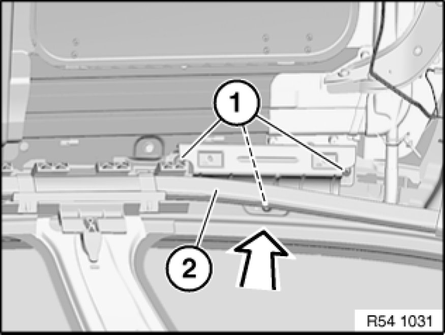
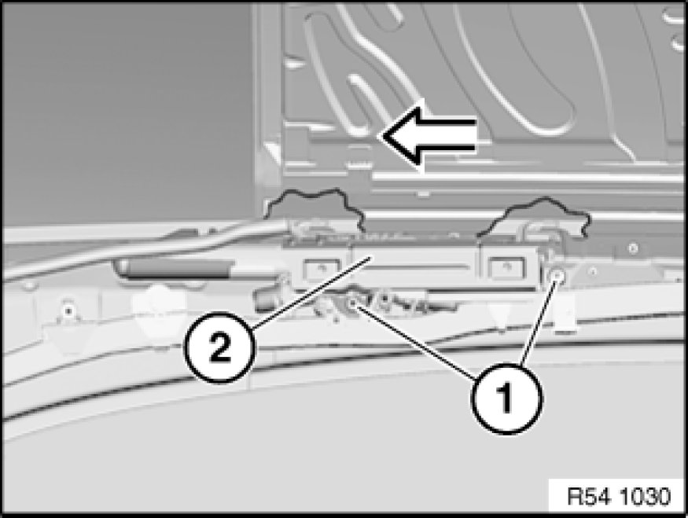
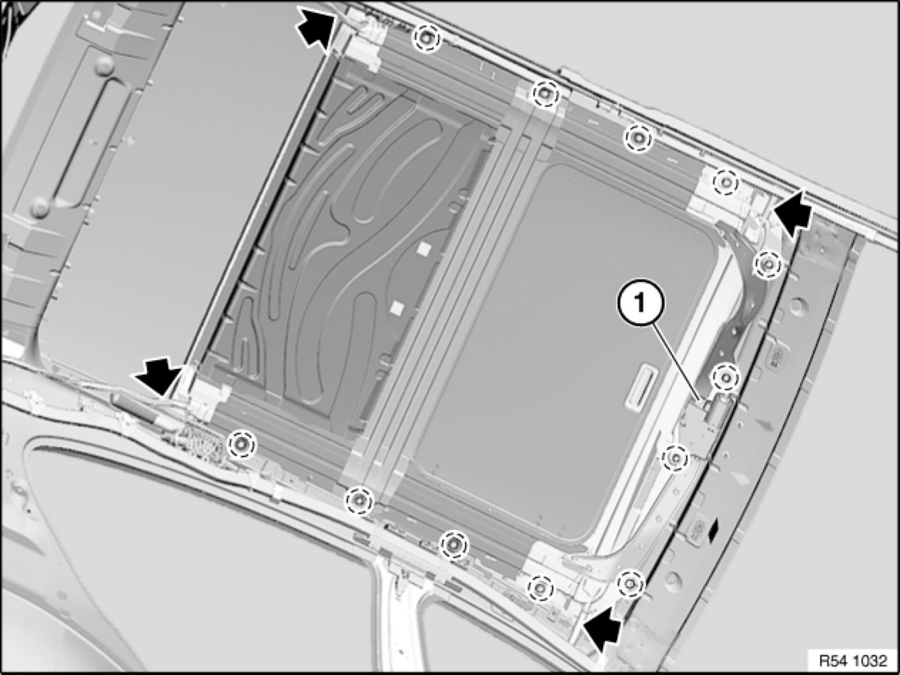
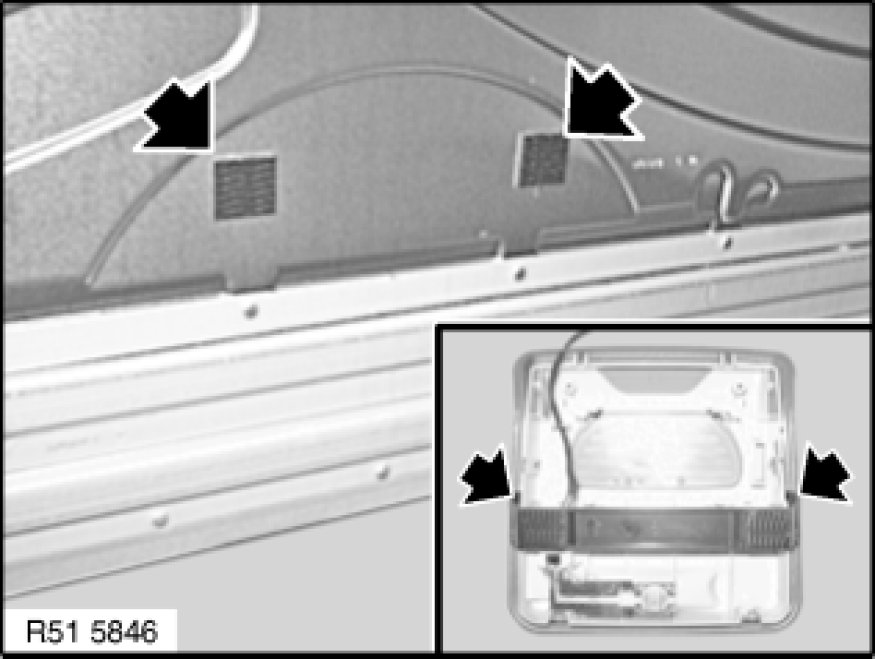
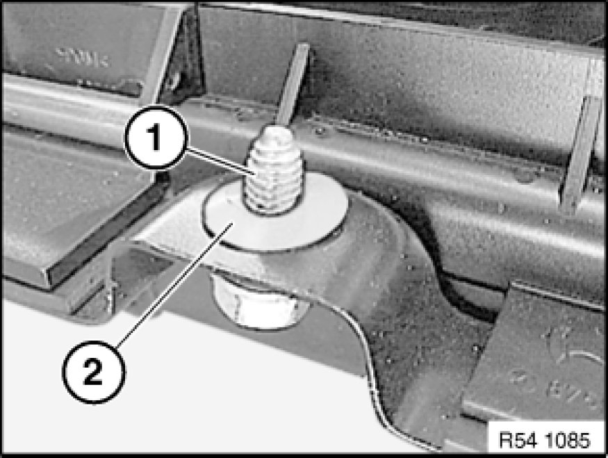

54 12 211 Removing and Installing Complete Glass Slide/Tilt Sunroof
54 12 211 - Removing and installing complete glass slide/tilt sunroof

Necessary preliminary tasks:
- Remove roofliner 51 44 011 Removing And Installing/Replacing Headliner (With Slide/Tilt Sunroof)
- Open rear lid
Important!
A second person is required to help in removing the glass slide/tilt sunroof.

Front holder:
Carefully folding pack (2).
Release screws (1).
Tightening torque 51 71 07AZ Specifications.
Remove holder for handles.

Rear holder:
Release screws (1).
Tightening torque 51 71 07AZ Specifications.
Remove holder (2) for handle in direction of arrow.

- Unfasten plug connection (1) and disconnect.
- Detach water drain hoses.
- Helper must hold glass slide/tilt sunroof to prevent it falling out.
- Release screws in marked area and carefully lower glass slide/tilt sunroof.
Tightening torque: 54 12 02AZ 54 12 Mechanical Components of Sun Roof.
Important!
Do not damage any surrounding parts when removing the glass slide/tilt sunroof.
- Remove glass slide/tilt sunroof completely (through rear lid at rear).

Important!
Mixed installation of the Velcro-type connection is not permitted.
In order to avoid mixed installation, remove the old Velcro-type material and attach the new Velcro-type material.
New and old Velcro-type fasteners differ in colour:
Black: - Old Velcro-type fastener
White: - -New Velcro-type fastener
Only black/black or white/white pairings are permitted.

Installation:
If necessary, remove fabric adhesive tape.
To stop grating noises, secure all screws (1) prior to installation with plastic washers (2).
If the standard screws can no longer grip, use "repair screws" (have larger threads).
Important!
Do not crush any cables when fitting the glass slide/tilt sunroof.
Initialize Testing and Inspection glass slide/tilt sunroof.